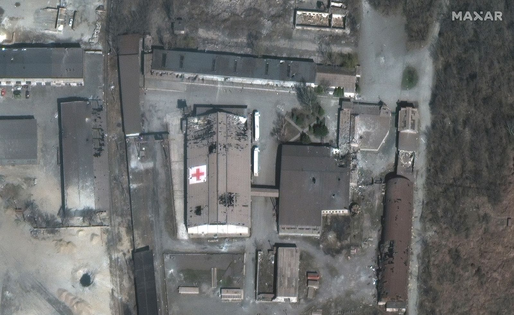
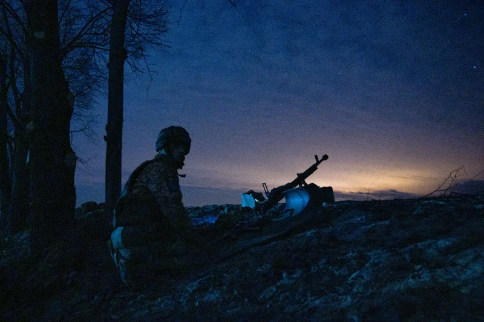

1 / 20
Ukrainian President Volodymyr Zelensky speaks to the media about the war crime's in Bucha, Ukraine, on April 4.
2 / 20

A satellite image shows a shelled warehouse that was being used by the Red Cross in Mariupol on March 29. Maxar Technologies
3 / 20
Military cadets attend a funeral ceremony at a church in Lviv on March 15.
4 / 20

Ukrainians crowd under a destroyed bridge as they try to flee across the Irpin River on the outskirts of Kyiv.
5 / 20
Marina Yatsko runs behind her boyfriend, Fedor, as they arrive at the hospital with her 18-month-old son, Kirill, who was wounded by shelling in Mariupol. Medical workers frantically tried to save the boy's life, but he didn't survive.
6 / 20
Paramedics treat an elderly woman wounded by shelling before transferring her to a hospital in Mariupol.
7 / 20
Local residents prepare Molotov cocktails in Uzhhorod, Ukraine.
8 / 20
Following a national directive to help complicate the invading Russian Army's attempts to navigate, a road worker removes signs near Pisarivka, Ukraine.
9 / 20
Newly married couple Yaryna Arieva and Sviatoslav Fursin pose for photo in Kyiv on February 25 after they joined the Territorial Defense Forces.
10 / 20

Ukrainian soldiers outside Kharkiv await the attack of a Russion tank column from Belgorod.
11 / 20
An American volunteer teaching Ukrainian soldiers how to use a Javelin missile outside Zaporizhzhia, in southeastern Ukraine, on April 28.
12 / 20
Sister Diogena Tereshkevych comforting people displaced from eastern Ukraine inside a bomb shelter during an air raid alert in the western Ukrainian city of Lviv.
13 / 20
An unattended casualty on the platform in the aftermath of the attack on the railway station where civilians were evacuating.
14 / 20
Satellite images taken prior to the bombing showed the world "CHILDREN" had been written in Russian on the ground at the front and back of the theater, possibly in an attempt to alert Russian forces of who was inside.
15 / 20
Ukrainian soldiers and civilians take shelter in the tunnels underneath Azov steel plant, Mariupol.
16 / 20
Images show the aftermath of a bombing in Bilohorivka, a village in the Luhansk region of Ukraine. 60 people are feared dead following the airstrike, according to Serhiy Hayday, head of the Luhansk Regional Military Administration.
17 / 20
Members of Ukraine’s Territorial Defense Forces trained near Lviv. Ukraine’s national network of Territorial Defense Forces was formed after Russia’s 2014 invasion of Ukraine’s eastern Donbas region and reflects the willingness of civilians to take up arms in defense of their homeland.
18 / 20
Programming students Vladislav and Vitali Mamin study in their bomb shelter in Kharkiv.
19 / 20
Ukrainian soldiers rest at their position near Lyman, eastern Ukraine, amid Russian invasion of Ukraine.
20 / 20
Ukrainian servicemen install a machine gun on a tank during repairs after fighting Russian forces in the country's Donetsk Oblast in eastern Ukraine.